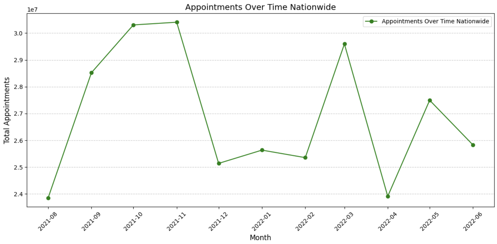

Project Context
With growing service demands and mounting pressure to improve efficiency, the NHS must continuously adapt its infrastructure and resource planning. Missed GP appointments alone cost millions annually. However, this data analysis revealed that post-COVID booking behaviours, staff shortages, and inconsistent data entry practices significantly shaped NHS appointment dynamics. Poor data quality in certain regions also hindered insight generation, highlighting the need for improved collection, entry, and tracking systems.
Objectives
This analysis focuses on key questions to guide decision-making and optimise operations:
- Whether staffing and infrastructure levels align with patient needs
- How resources are deployed across regions and services
- What patterns underlie missed appointments and where interventions might help
- How deeper data insights can guide smarter resource allocation
Analytical Approach
| Process | Highlights |
|---|---|
| Data Import |
Loaded multiple NHS datasets with different time ranges and consolidated
appointment data across regional, national, and duration-specific sources
|
| Data Cleaning |
|
| Data Enhancement |
|
| Technical Stack & Methods |
|
| Data Quality Focus |
|
Key Patterns and Insights
The analysis uncovered nuanced patterns across appointment types, regions, and booking behaviours:
- Appointment Volatility: Rather than following a stable seasonal cycle, appointment volumes showed sharp peaks and drops, suggesting reactive shifts potentially driven by policy changes, staff shortages, or post-COVID backlogs. 
- Capacity Gaps: NHS appointment numbers remained consistently below planning targets, suggesting chronic underutilisation of capacity.
- Mode of Booking Impacts Attendance: Although face-to-face appointments had the highest total number of attendees, they also recorded the most missed appointments. In contrast, telephone bookings had significantly lower no-show rates, indicating higher reliability per appointment.
- Regional Variation: Some ICBs like NHS NW London had higher usage of online/video bookings, revealing successful digital integration.
- Data Quality Patterns: “Unknown / Data Quality” entries decreased in areas with more appointments, suggesting correlation between high volumes and stronger data practices.
Chart: NHS appointment volatility over time.
Chart: NHS capacity vs actual appointments.
Chart: How appointment attendance relates to appointment mode.
Chart: Top 4 locations by appointment mode.
Chart: Proportion of Unknown Data vs Total Appointments (%).
Twitter Engagement & Sentiment
A complementary sentiment analysis of 1,174 NHS-related tweets revealed the emotional tone and engagement landscape around appointments:
- #Healthcare dominated hashtags, followed by #NHS and #appointments.
- After cleaning duplicates, only 969 unique tweets remained, ensuring authentic sentiment trends.
- Public sentiment leaned slightly positive overall but highlighted frustrations around wait times and access barriers.
- Positive sentiment around NHS services suggests that better promotion of underused channels, such as online/video appointments, could increase patient uptake and reduce missed appointments.
Chart: Hashtags with count more than 10.
Chart: Twitter sentiment analysis.
Recommendations
While service utilisation was uneven across methods and regions, the deeper issue appeared to be data governance. Many of the missed insights stemmed from inconsistent reporting, suggesting that staff training and systemic support are as vital as capacity planning or digital adoption.
- Implement targeted SMS/email reminders for face-to-face bookings, where DNA rates are highest. This low-cost step can improve attendance and resource efficiency.
- Launch regional awareness campaigns to boost adoption of video and online appointments, especially in areas showing low uptake. NHS NW London’s success can serve as a template.
- Standardise appointment entry protocols across ICBs to reduce “Unknown” classifications. Tie data quality KPIs to staff performance or incentive schemes.
- Recalibrate NHS planning forecasts based on rolling averages and post-pandemic shifts. This would avoid overbudgeting for unused capacity.
- Establish continuous social listening tools using Twitter sentiment signals to detect emerging public frustrations or unmet needs in near real-time.
Conclusion
This analysis went beyond simple appointment counts to uncover deeper structural issues within the NHS, from inconsistent data entry and underused digital services to misaligned capacity planning. While the number of missed appointments is frequently cited in the media, this project reveals that the real challenge lies in uneven service utilisation and fragmented information systems.
By combining structured datasets with public sentiment analysis, I managed to build a clearer picture of both operational pain points and public-facing perceptions. The findings suggest that smarter communication, better data discipline, and demand-aligned resource planning could unlock significant efficiency gains across the NHS.